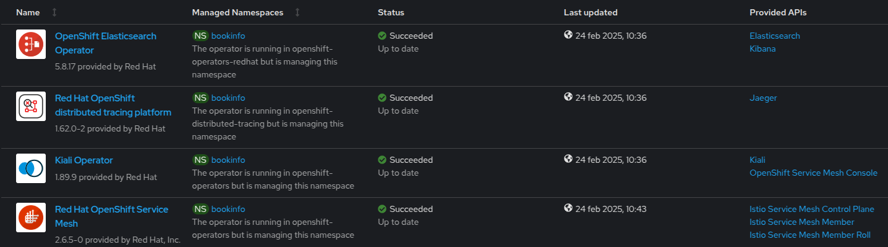

Service Mesh Demo¶
1. Requisiti¶
1.1 Setup Operators¶
1. OpenShift Elasticsearch Operator
2. Red Hat OpenShift distributed tracing platform
3. Kiali Operator
4. Red Hat OpenShift Service Mesh

1.2 Definizione ServiceMeshControlPlane¶
apiVersion: maistra.io/v2
kind: ServiceMeshControlPlane
metadata:
name: basic
namespace: istio-system
spec:
addons:
grafana:
enabled: true
jaeger:
install:
storage:
type: Memory
kiali:
enabled: true
prometheus:
enabled: true
gateways:
openshiftRoute:
enabled: true
mode: MultiTenant
policy:
type: Istiod
profiles:
- default
telemetry:
type: Istiod
tracing:
sampling: 10000
type: Jaeger
version: v2.6
2. Aggiunta di servizi in Service Mesh¶
2.1 Definizione ServiceMeshMemberRoll¶
Questo oggetto fornisce agli amministratori di OpenShift Service Mesh un modo per delegare le autorizzazioni e per aggiungere progetti a una mesh.
apiVersion: maistra.io/v1
kind: ServiceMeshMemberRoll
metadata:
name: default
namespace: istio-system
spec:
members:
- bookinfo
La Service Mesh definisce anche le network policy nella control plane della Service Mesh e nei namespace partecipanti, regolando il traffico all'interno della mesh.
oc get netpol -n bookinfo
istio-expose-route-basic
istio-mesh-basic
3. Deploy Bookinfo¶
L'applicazione Bookinfo visualizza informazioni simili ad un negozio di libri online. L'applicazione mostra una pagina che descrive il libro, i suoi dettagli (ISBN, numero di pagine e altre informazioni) e le recensioni ricevute.
L'applicazione Bookinfo è composta da questi microservizi:
Il microservizio productpage chiama i microservizi details e reviews per popolare la pagina. Il microservizio details contiene informazioni sui libri. Il microservizio reviews contiene le recensioni dei librie e chiama il microservizio dei ratings. Il microservizio dei ratings contiene le informazioni sulle classifiche dei libri che accompagnano le recensioni.
Esistono tre versioni del microservizio reviews:
- La versione v1 non chiama il servizio di ratings.
- La versione v2 chiama il Servizio reviews e visualizza ogni valutazione con stelle nere.
- La versione v3 chiama il Servizio reviews e visualizza ogni valutazione con stelle rosse.
4. Sidecar Injection¶
Annotations nei deployment per abilitare l'injection del proxy istio
apiVersion: apps/v1
kind: Deployment
metadata:
[...]
spec:
template:
metadata:
annotations:
sidecar.istio.io/inject: 'true'
E' possibile sfruttare l'injection automatica dei sidecar configurando una label direttamente sul namespace:
$ oc label namespace <nome_namespace> istio-injection=enabled
5. Versioning del deployment¶
apiVersion: apps/v1
kind: Deployment
metadata:
[...]
spec:
template:
metadata:
labels:
app: reviews
version: v1
6. Definizione IngressGateway¶
Una risorsa gateway rappresenta un bilanciatore di carico che opera ai margini della mesh, gestendo le connessioni HTTP/TCP in entrata e in uscita. La sua specifica descrive:
- un set di porte che devono essere esposte
- il tipo di protocollo da utilizzare
- la configurazione SNI per il bilanciatore di carico e altro ancora.
apiVersion: networking.istio.io/v1beta1
kind: Gateway
metadata:
name: bookinfo-gateway
spec:
selector:
istio: ingressgateway # use istio default controller
servers:
- port:
number: 8080
name: http
protocol: HTTP
hosts:
- "*"
A differenza di una Ingress o Rotta standard, non include alcuna configurazione di routing del traffico. Il routing del traffico è invece configurato utilizzando l'oggetto VirtualService.
7. Definizione VirtualServices¶
Per specificare il routing e per far funzionare il gateway come previsto, bisogna anche associare il gateway a un virtualService:
apiVersion: networking.istio.io/v1beta1
kind: VirtualService
metadata:
name: bookinfo
spec:
hosts:
- "*"
gateways:
- bookinfo-gateway
http:
- match:
- uri:
exact: /productpage
- uri:
prefix: /static
- uri:
exact: /login
- uri:
exact: /logout
- uri:
prefix: /api/v1/products
route:
- destination:
host: productpage
port:
number: 9080
8. Gestione del traffico¶
Per il microservizio reviews definiamo un oggetto DestinationRule per identificare i subset in base alla versione del deployment, configura quindi tre diversi sottoinsiemi:
apiVersion: networking.istio.io/v1beta1
kind: DestinationRule
metadata:
name: reviews
namespace: bookinfo
spec:
host: reviews
subsets:
- labels:
version: v1
name: v1
- labels:
version: v2
name: v2
- labels:
version: v3
name: v3
trafficPolicy:
loadBalancer:
simple: RANDOM
Scenario 1 (Routing)¶
Veicoliamo tutto il traffico solo per la versione v1 di review e poi solo per v2
apiVersion: networking.istio.io/v1beta1
kind: VirtualService
metadata:
name: reviews
spec:
hosts:
- reviews
http:
- route:
- destination:
host: reviews
subset: v1 #v2
Scenario 2 (Shifting)¶
Veicoliamo una percentuale di traffico sulle 2 istanze v1 e v2
apiVersion: networking.istio.io/v1beta1
kind: VirtualService
metadata:
name: reviews
spec:
hosts:
- reviews
http:
- route:
- destination:
host: reviews
subset: v1
weight: 80
- destination:
host: reviews
subset: v2
weight: 20
Scenario 3 (Http header)¶
Set header http, veicola traffico solo su v2 solo se corrisponde un determinato utente
apiVersion: networking.istio.io/v1beta1
kind: VirtualService
metadata:
name: reviews
spec:
hosts:
- reviews
http:
- match:
- headers:
end-user:
exact: jason
route:
- destination:
host: reviews
subset: v2
- route:
- destination:
host: reviews
subset: v3
Scenario 4 (Fault Injection)¶
Fault injection microservizio details e osservere jaeger
apiVersion: networking.istio.io/v1beta1
kind: DestinationRule
metadata:
name: details
spec:
host: details
subsets:
- name: v1
labels:
version: v1
---
apiVersion: networking.istio.io/v1beta1
kind: VirtualService
metadata:
name: details
spec:
hosts:
- details
http:
- fault:
abort:
httpStatus: 555
percentage:
value: 100
route:
- destination:
host: details
subset: v1
Scenario 5 (Delay)¶
Delay
apiVersion: networking.istio.io/v1beta1
kind: VirtualService
metadata:
name: details
spec:
hosts:
- details
http:
- fault:
delay:
fixedDelay: 7s
percentage:
value: 100
route:
- destination:
host: details
subset: v1
Scenario 6 (Mirroring)¶
Mirroring del traffico osservare con grafana Il mirroring invia una copia del traffico live a un servizio mirrorato.
apiVersion: networking.istio.io/v1beta1
kind: VirtualService
metadata:
name: reviews
spec:
hosts:
- reviews
http:
- route:
- destination:
host: reviews
subset: v1
weight: 100
mirror:
host: reviews
subset: v2
mirrorPercentage:
value: 100.0
Scenario 7 (Circuit breaking)¶
Il circuit breaking è un pattern importante per la creazione di applicazioni microservice resilienti. Il circuit breaking consente di scrivere applicazioni che limitano l'impatto di guasti, picchi di latenza e altri effetti indesiderati delle peculiarità della rete.
apiVersion: networking.istio.io/v1beta1
kind: DestinationRule
metadata:
name: details
spec:
host: details
subsets:
- name: v1
labels:
version: v1
trafficPolicy:
connectionPool:
tcp:
maxConnections: 1
http:
http1MaxPendingRequests: 1
maxRequestsPerConnection: 1
outlierDetection:
consecutive5xxErrors: 1
interval: 1s
baseEjectionTime: 3m
maxEjectionPercent: 100
Queste regole indicano che se si supera più di una connessione e contemporanea, dovrebbero verificarsi alcuni errori quando istio-proxy tenta di aprire ulteriori richieste e connessioni.
maxConnections: 1
http1MaxPendingRequests: 1